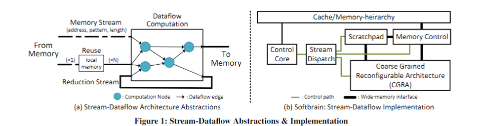
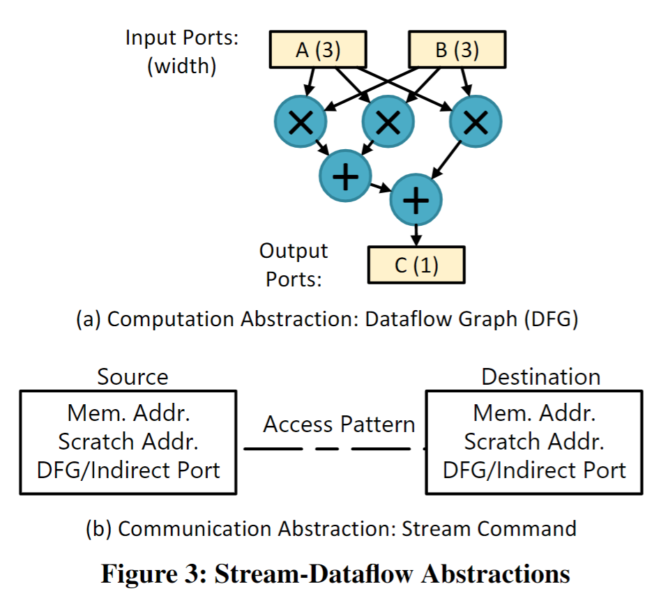
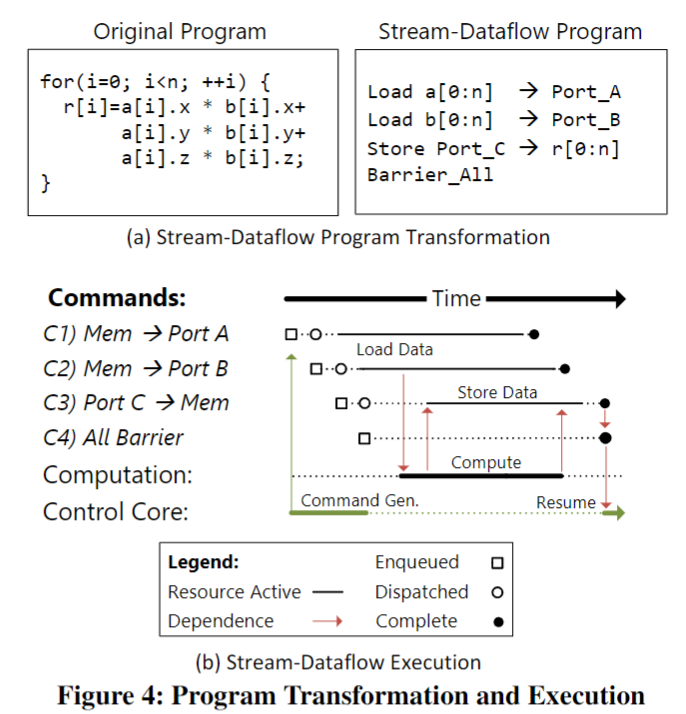
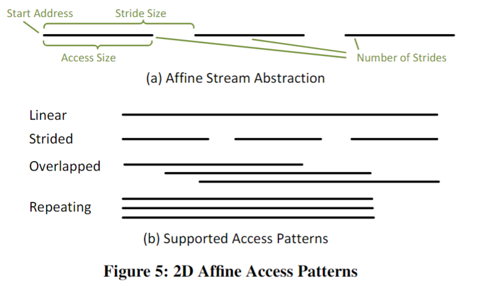
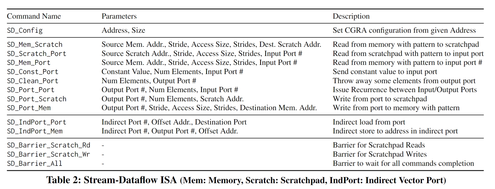
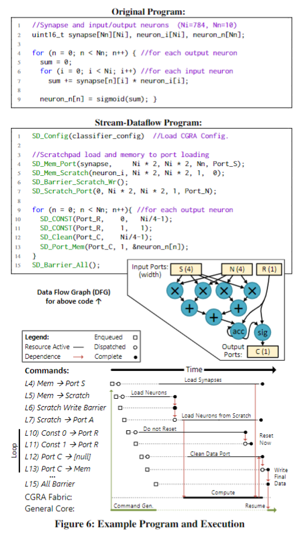
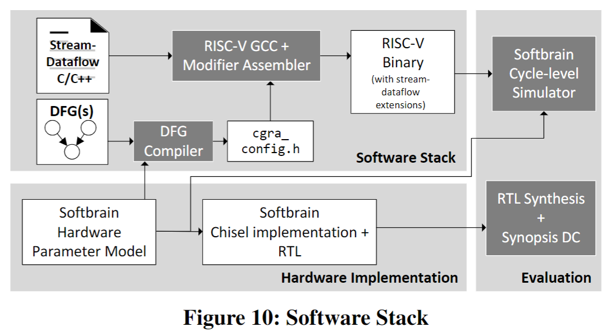

综述
近年来数据流处理器需求增长，传统冯诺依曼架构不再够用。
FPGA项目：
Microsoft Catapult FPGA 加速器项目
特征：
- 计算强度高，阶段长
- 具有简单控制流的小指令占用空间
- 直接的内存访问和重用模式
原因很简单：通过利用并发性，这些属性有助于非常高效的硬件实现。
现有的数据并行硬件解决方案在这些工作负载上表现良好，但为了更通用，为了取代特定领域的硬件，牺牲了太多的效率。
例如，短向量 SIMD 依赖于低效的通用流水来进行控制和地址生成，但加速代码通常没有复杂的控制和内存访问。 GPU 使用硬件来隐藏内存延迟以实现大规模多线程，但加速代码的内存访问模式通常可以在没有多线程的情况下轻松解耦。
可重构的粗粒组成架构（CGRA）和专用的地址空间（Scratchpad）
图1：

图2：

图3：

红色箭头表面着之间存在依赖关系，这里不能同时执行。
当端口A和端口B可用，则计算开始。同时，最后两个命令生成并排队。一旦计算的一个实例完成，所计算的数据就开始流传输到内存。
适应数据流的特征：
1. 应该保证DFG图应该保证足够大
2. 数据流的流动应该尽可能的“长”
3. 重用的数据应该保证被scratchpad记录，以保证减少访存
理解：scratchpad = Cache，可以根据应用定制大小
应该设计的接口范例：
例子：
重新回到 Scoreboard 设计
这个图非常关键，应该就是OneAPI的设计逻辑，因为OneAPI引用了ISCA09和ISCA17的文章和此文均有关联。
在之前的文章中，不止一次提到了数据流处理器这个“古老”的设计理念。根据我所掌握的历史来看，数据流思想的诞生应该从1974年，在ISCA上由Dennis 和Misunas在“A Preliminary Architecture for a Basic Data Flow Processor”中提及。在之后的若干年里，Treleaven （ACM Computing Surveys1982） ，Veen （ACM Computing Surveys1986）,Gurd （CACM 1985 ），Arvind and Nikhil （IEEE TC 1990）,Lee （IEEE Computer 1994 ）中也数次提及这个概念。但是由于控制流结构在通用处理器中的商业模式已经较为稳定，数据流的研究一直以来被视为非主流的设计方案。直到深度学习处理器这类逐渐向火以来，数据流的概念又被当下的研究者重新研究。本文主要对于ISCA_2017中的一文写些文中的精髓部分的理解。
数据流设计的起源思想是：具有长时间的高计算强度，简单的控制模式和依赖关系，简单的流式存储访问和重用结构。本文中定义了一个通用的架构（硬-软件接口），该架构可以提供更有效的数据流式表达程序。
流式数据流架构的三点基本抽象原则：
- 用于重复的流水线计算的数据流图
- 基于流的命令，以促进数据在组件之间以及到内存的高效移动
- 专用（便签本）地址空间，可以有效地重复使用数据
基于以上的三点抽象原则：

上图描述了流数据流的程序员视图，包括数据流图本身，以及用于内存访问，读取重用和递归的显式流通信。抽象的表达了直观的硬件实现；

上图表示的是本文中的high-level的设计。它由可重构的粗粒组成架构（CGRA）和专用的地址空间（Scratchpad），通过宽总线连接至内存。它由一个简单的控制核心进行控制，该控制核心发送流命令由内存控制引擎，暂存器控制引擎和CGRA同时执行。这个基于流的接口的粗颗粒性质使内核相当简单而不牺牲高度并行的执行。流访问模式和受限的内存语义也使高效地址生成和协调硬件。相对于特定领域的体系结构，流数据流处理器可以重新配置其数据路径和内存流，因此更普遍和适应性强。
- 初探Stream-Dataflow架构
本文提出的流式数据流的架构主要由Stream组件和dataflow组件构成。其中Stream组件提供类似于vertor运算的与内存交互的接口（这是vertor架构的优势，下图b），dataflow组件提供空间上的计算规范（这是dataflow的优势，下图a）。

Stream-Dataflow 流式数据流的抽象架构
上图主要设计思想是stream接口提供对一组有序的stream命令的支持，该命令嵌入在现有的Von Neu mann ISA中。流命令指定长和并发的内存访问模式。可表达的模式包括连续的，跨步的和间接的。我们添加了一个单独的“Scratch”地址空间，该地址空间可用于有效收集和访问重复使用的数据。最后，数据流接口通过数据流图（DFG）公开指令及其相关性。 DFG的输入和输出接口被命名为具有可配置宽度的端口，它们是流命令的源和目的地。
Micro-architecture设计思想
一种标准的硬件实现包括：用于计算的粗粒度可重配置体系结构（CGRA），可编程暂存器，用于处理存储器或暂存器访问命令的流引擎以及用于生成流命令的控制核心。流分派器强制流之间的体系结构相关性。控制核心可以执行任意程序，但可以编程为将尽可能多的工作分流到流数据流硬件。（结合第二张图分析）
- Stream-Dataflow的详细设计方案
这部分主要从抽象，执行模型和ISA来描述数据流的体系结构。
- 抽象
再次观察架构图的图a，数据流的架构中，通过将控制计算的顺序，映射城数据流图。通过数据的流向和barrier来控制数据流向的有序正确进行。在数据流图中，存在着指令数据计算的先后的依赖关系，一条中间指令的执行，必须等到符合满足它的数据已经ready时，才可以开始进行计算。将传统的PC指令控制的顺序，转换成数据之间的依赖关系。在数据流图当中，用户显示命令数据的起点节点和终止节点来确保一次数据的迭代的开始与终止。在架构设计中，用户还可以自定义barrier用以确保程序的序列正确执行。如果没有barrier的控制，那么只要等到数据的ready，所有的数据流都可以同时执行各自的任务。
- 编程与执行模型
Stream-Dataflow由配置信息，数据流动，以及barrier命令组成。在通用的程序当中，可以通过转换变为数据流的代码，实例如下：

在图a中，内存访问了a，b和r。根据架构a的乘加运算关系可将左侧的代码转换为右侧的代码。在下面的b图中，是上述程序的执行过程。程序均以命令开始启动数据开始计算，红色箭头表面着之间存在依赖关系，这里不能同时执行。当端口A和端口B可用（端口宽度为3），则计算开始。同时，最后两个命令生成并排队。一旦计算的一个实例完成，所计算的数据就开始流传输到内存。当所有数据都释放到内存系统中时，屏障命令的条件得到满足，控制核心也将恢复。为了获得更好的性能，应该保证DFG图应该保证足够大，这样可以满足尽可能多的指令并行运算。第二，数据流的流动应该尽可能的“长”。第三，重用的数据应该保证被scratchpad记录，以保证减少访存。
- ISA指令集
指令集的设计代表了体系结构设计的灵魂。下图是Stream-Dataflow支持的指令集。

在上面的表格中，访存的地址的格式文中作者进行了特别的设计使得更符合数据流思想。

这样的模式是二维的仿射访问，由访问大小access size（最低级别访问的大小），跨步stride size（连续访问之间的大小）和前进的步数number of strides。对于不同情况下的（linear，Strided等）可以映射成下面图那种形式。
- 微架构的设计
设计有着两个原则：
- 避免使用大型的或者耗电量大的结构，特别如多端口存储器
- 充分利用ISA提供的并发性。
根据以上的两个原则，可以设计出：

在整体上看来，该设计在生成流命令的时候考虑了低功耗控制内核，一组与引擎有效连接并移动数据的流引擎，以及用于高效并行计算的深层管道可重配置数据流基板。
详细来说，主要由以下五种组件构成：
- 控制核：一种低功耗的单发有序控制核，目的是生成数据流命令用以调度程序
- Stream Dispatcher：该单元通过跟踪流资源分配和向流引擎发出命令来管理流引擎的并发执行。
- 流引擎：进行数据访问和移动，通过三个“流引擎”，其中一个用于存储（便于广泛访问内存），一个用于暂存器（高效数据）重用，和一个用于DFG重复（用于在没有内存存储的情况下立即重用）。流引擎对各自的内存和暂存器资源分配给他们的流进行仲裁。
- 向量端口：向量端口是两个端口之间的接口。CGRA执行的计算以及传入/传出数据的流。另外，一组矢量端口不连接到CGRA的设备用于存储间接加载/存储的流地址。
- CGRA：粗粒度可重配置架构支持数据流图的流水线计算，CGRA避免了重复访问寄存器文件或近期内存数据。
在此过程中，由数据流引擎负责控制该流的生命周期，该引擎负责调度相关程序，发布新的流命令等。
- 流调度与控制核心
流分派器的作用是增强对流（和屏障命令）的资源依赖性，并通过向它们发送命令来协调流引擎的执行。这部分的内部架构设计如下：

从图中可以看出，来自控制核心的流请求被排队（Stream Cmd Queue），直到它们可以被命令解码器处理为止。该单元与资源状态检查逻辑进行协商，以确定是否可以发出命令，如果可以，则将其出队。屏障命令阻止核心发出进一步的流命令，直到解决屏障条件为止。
- 资源管理
具有相同源或目标端口的后续流必须按程序顺序发布，即控制核心上流的动态顺序。流分配单元负责维护此顺序，并通过在记分板上跟踪矢量端口和流引擎状态来实现。在发布流之前，它会检查这些记分板的状态。
引导程序端口的状态为“已占用”，“空闲”或“所有请求”。端口在发布时（由资源分配器）从空闲状态变为占用状态，并且该流在飞行中逻辑上拥有该资源。当该流结束时，关联的流引擎会通知调度程序将向量端口的记分板条目更新为自由状态。飞行中的所有请求状态指示所有对内存流的请求已完全发送到内存系统（但尚未到达）。此状态作为一种优化存在，以使使用同一端口的两个内存流能够同时在存储系统中拥有它们的请求。
- 流引擎
流引擎管理组件通过被许多激活流对各种资源的并发访问（内存接口，暂存器，输出向量端口）。通过从流分配器接收命令来启动流引擎。然后，它们在流的生命周期内协调地址生成和数据传输，并最终在释放相应的向量端口时通知调度程序（当流完成的时候）。流分配器确保并发流对其向量端口具有专用访问权限。未连接到CGRA的矢量端口促进了间接访问，该端口可缓冲运行中的地址。
整体上来说，该架构的设计就大致如此。他的效果评估如下：

55nm下的仿真结果，对比功耗与面积。

运行DNN时候与GPU,Diannao的性能比较。
总结：
本文提出了一种新的执行模型和架构，流式数据流架构，它提供了抽象，可以平衡矢量和空间体系结构之间的折衷，并在重要的一类数据处理工作负载上获得二者的专业化能力。
我们设想，这种架构的范式可以具有根本性通过减少专用模块的数量来简化对未来芯片的影响。相反，流数据流类型的结构可以与CPU和GPU处理器并排放置，并具有综合功能当程序遇到适当的阶段以进行高效加载时，就可以快速运行。这不仅减少了面积和复杂性大量的专用加速器，还可以减轻不断增长的设计和验证成本。在如此广阔的环境中，开发有效的编译工具以平衡这些架构所提供的并行性和数据重用之间的复杂权衡至关重要。为流数据流体系结构提供动态编译支持可以提高特定架构的能效。